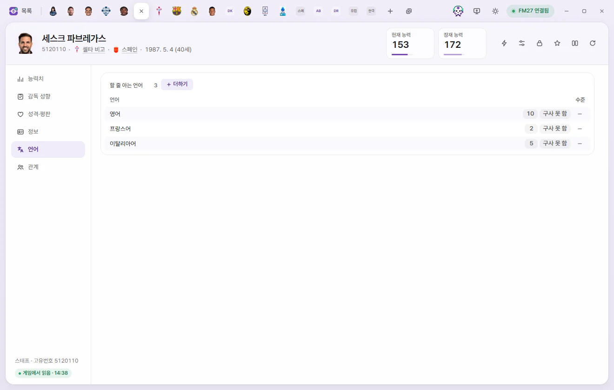
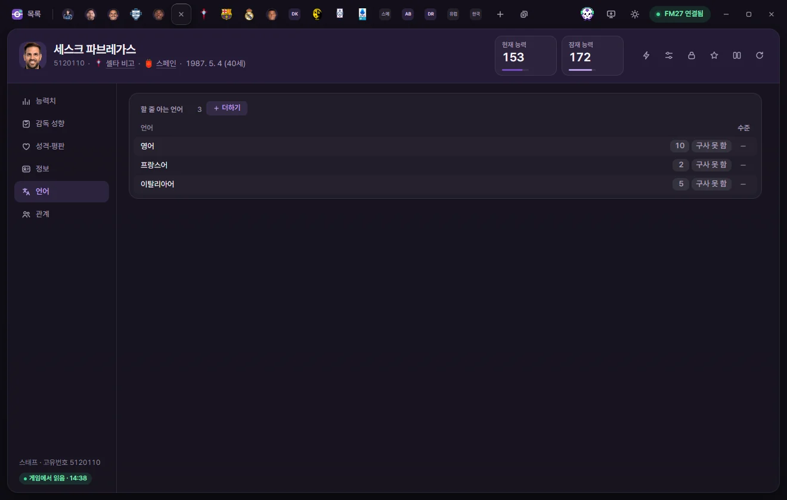
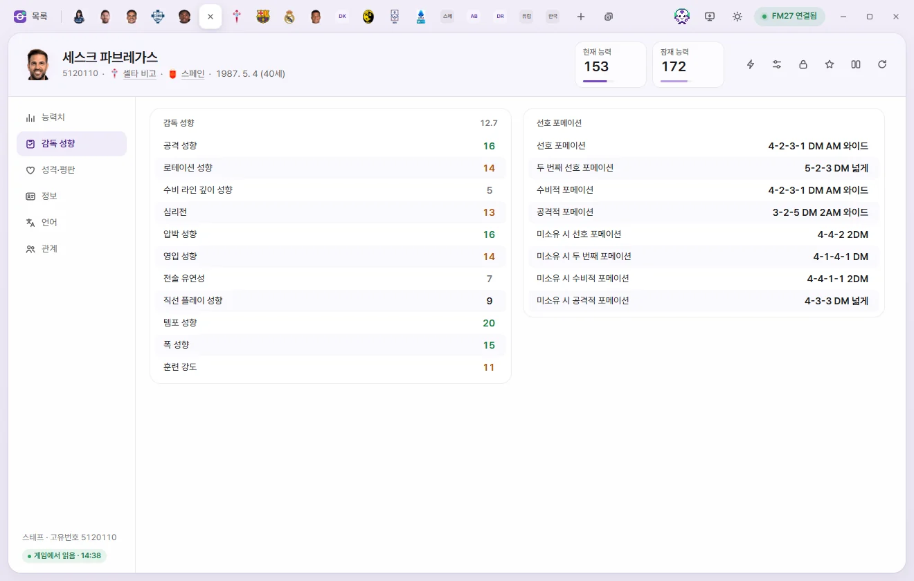
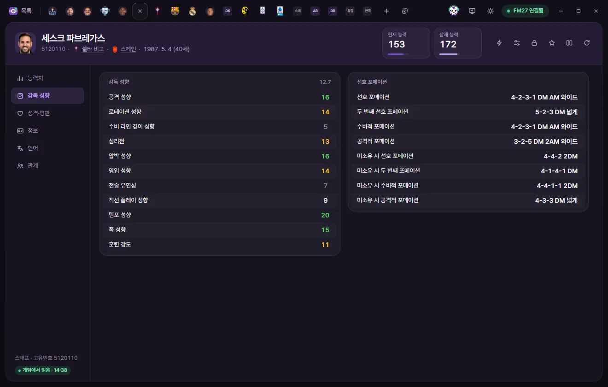
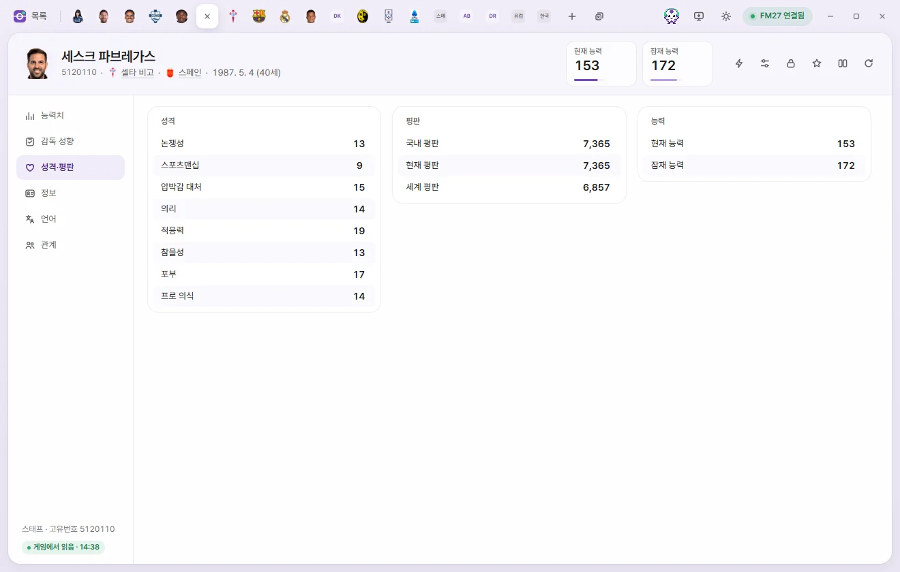
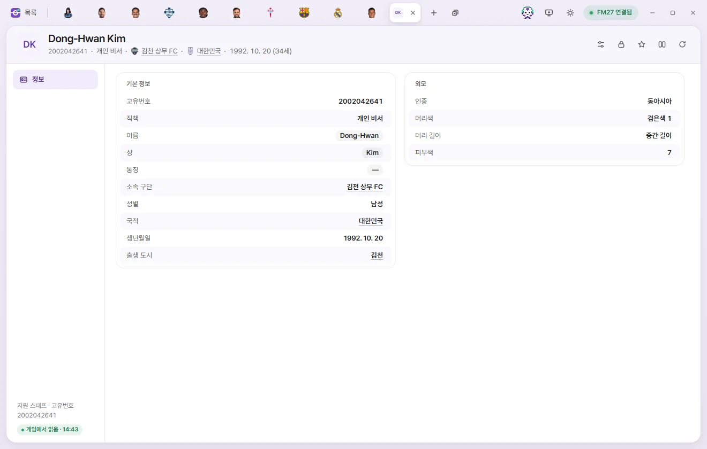

Edit tabs
Staff & support staff
How to edit attributes, manager tendencies, preferred formations, and contracts for staff such as managers, coaches, and scouts, and how to view support staff (Personal Assistants, Press Officers, and more).



Opening a tab
Click any name in the Staff list or Support staff list, or open them from the 'Staff' page of a Club tab. The tab header, editing controls, and saving work the same way as on player tabs—please read the shared guide on the player page first.
Staff tab header
- Below the name you'll see Unique ID, Club, Nationality, and Date of birth (age). Someone with an agreed move shows 'Future transfer', and someone with a set retirement date shows 'Set to retire'.
- The number cards show Current ability and Potential ability (1–200 each). Click either card to type a number right away.
- The buttons on the right are ⚡ In-game editor actions, Presets, Locks, Bookmarks, Compare, and Reload from game. For staff, the ⚡ menu covers club transfers, national teams, changing nationality, city of birth, or gender, and retirement dates. Each action is explained in Game editor (⚡).
A Staff tab has six subpages: Attributes, Manager tendencies, Personality & reputation, Info, Languages, and Relationships.
Attributes
Every attribute runs from 1 to 20 and is listed alphabetically within its group. The number beside each group heading is the average.
| Group | Fields |
|---|---|
| Coaching | Attacking coaching, Defending coaching, Fitness coaching, Goalkeeping coaching, Mental coaching, Tactical coaching, Technical coaching, Set piece coaching, Working with youngsters |
| Mental | Determination, Level of discipline, People management, Motivating |
| Knowledge | Judging player ability, Judging player potential, Judging staff ability, Negotiating, Tactical knowledge |
| Medical & analysis | Physiotherapy, Sports science, Analysing data |
| Owner & president | Business, Interference, Patience, Resources |
Manager tendencies



| Group | Fields | Range |
|---|---|---|
| Manager tendencies | Attacking, Directness, Pressing, Buying players, Mind games, Defensive line depth, Tactical flexibility, Training intensity, Squad rotation, Tempo, Width | 1–20 |
| Preferred formations | Preferred formation, Second preferred formation, Defensive formation, Attacking formation | Formation list |
| Preferred formations | Out-of-possession preferred formation, Out-of-possession second formation, Out-of-possession defensive formation, Out-of-possession attacking formation | Formation list |
The formation list offers 19 shapes—including 4-4-2, 4-3-3 DM Wide, 4-2-3-1 DM AM Wide, and 5-2-2-1 DM AM—plus 'Not set'. 'Out-of-possession' formations are the shapes used when the team doesn't have the ball.
Personality & reputation
| Group | Fields | Range |
|---|---|---|
| Personality | Controversy, Sportsmanship, Pressure, Loyalty, Adaptability, Temperament, Ambition, Professionalism | 1–20 |
| Reputation | Home reputation, Current reputation, World reputation | 0–10000 |
| Ability | Current ability, Potential ability | 1–200 |
Info


Overview
| Field | What it does | Editable range |
|---|---|---|
| Unique ID, Full name | Read-only | |
| Name, Last name, Common name | Click to edit the text. Name and Last name cannot be left blank | Up to 60 characters |
| Nationality, City of birth | Pick with the pencil button. Clicking Save applies the change using the game's own function (asks whether you've backed up your save for the first time) | Country & city lists |
| Club, Previous Club | Click to open that club's tab | Read-only |
| Gender | Change using 'Change to female' or 'Change to male' in the ⚡ menu | Read-only |
| Regen | Whether this staff member was generated by the game | Read-only |
| Set to retire | Retires at the end of this season | Yes, No |
| Retiring after spell at current club | Retires when leaving their current club. Whether the game actually retires staff from this flag hasn't been tested yet | Yes, No |
| Date of birth | Changing this also changes their age | Date |
| Height | In cm; 0 means none | 151–212 |
In the Other nationalities list, use + Add to add a country and − to remove one.
Appearance
Shows Language ID (read-only), ethnicity, Hair colour, Hair length, skin tone (0–20), and body type. The choices match those on player tabs (Player appearance).
Contract
| Field | What it does | Editable range |
|---|---|---|
| Job | Manager, Coach, Chief Scout, Doctor, etc. | Read-only |
| Weekly wage | Shown as monthly or annual wage depending on your Settings | £0–£100M |
| Contract signed, Contract expiry, Date joined | Contract dates | Date |
Languages
Works the same way as for players. Click a proficiency score (0–10) to change it, and use Cannot speak, Set level, + Add, and −. Native languages aren't listed here. Player languages
Relationships
Works the same way as for players. For favored or Disliked People and clubs, you can edit the type, reason, rating (0–100), and permanent flag, remove entries, or add new ones when open slots remain. Player relationships
Support staff


Support staff are the Press Officers, Player Liaison Officers, and Personal Assistants attached to managers. Because FM27 has no profile screen for these people, there is no way to see their Unique ID inside the game—use the Unique ID on this tab whenever you want to attach a custom face graphic.
- The header has no number cards and no ⚡ button.
- Below the name you'll see Job, Club, and Nationality.
| Field | What it does | Editable range |
|---|---|---|
| Unique ID | The ID used when assigning a face graphic (portrait photo) | Read-only |
| Job | Press Officer (press conference notices), Player Liaison Officer (team meetings and code of conduct notices), Personal Assistant, or My Personal Assistant | Read-only |
| Name, Last name, Common name | Click to edit the text | Up to 60 characters |
| Club | For a club manager's support staff, shows that club. Blank for a National Team manager's support staff and for My Personal Assistant | Read-only |
| Gender, Nationality, Date of birth, City of birth | Read-only | |
| Appearance (ethnicity, Hair colour, Hair length, skin tone) | Read-only |
'My Personal Assistant' is the personal assistant attached specifically to your own manager—they share your manager's nationality and appear as the Personal Assistant in your inbox. 'Personal Assistant' (#56) is mapped to the personal assistant attached to club and national team manager posts, though this hasn't been confirmed directly inside the game yet.